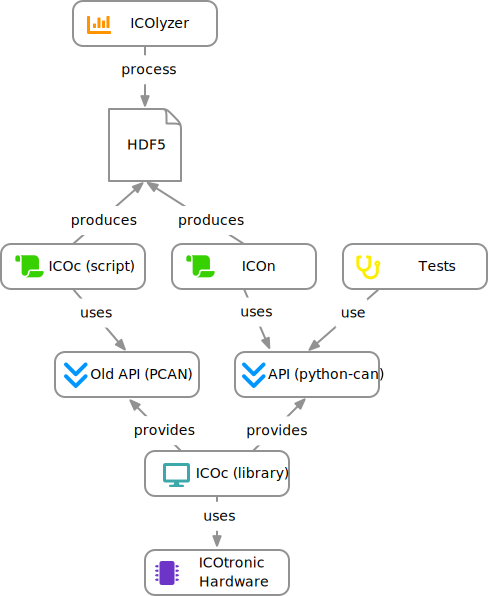

ICOtronic Documentation
1 Documentation
This repository collects various documentation for the ICOtronic system.
2 Download
You can access this repository and its submodules using the following command:
git clone --recursive git@github.com:MyTooliT/Documentation.git3 Build
You can use bookdown to generate
- HTML,
- EPUB, and
versions of this documentation. To do that please use the following make commands:
# Generate HTML documentation
make html
# Generate PDF
make pdf
# Generate EPUB document
make epub4 Akronyms
- AEM: Advanced Energy Monitoring
- BP: Byte Position
- CAN: Controller Area Network
- CAN-FD: CAN Flexible Data Rate
- CSMA/CD: Carrier Sense Multiple Access/Collision Detection
- CSMA/CR: Carrier Sense Multiple Access/Collision Resolution
- DLC: Data Length Code
- ECU: Electronic Control Units
- ESD: Electro Statical Discharge
- GD1: Graceful Degradation Level 1
- GD2: Graceful Degradation Level 2
- MSB: Most Significant Byte
- SHA: Sensory Holder Assembly
- STH: Sensory Tool Holder
- STU: Stationary Transceiver Unit
5 Terms
- Event (Message): Even messages transport information about signals and events/states
- Header: Supplemental data placed at the beginning of a block
- Jitter: Difference between best-case time and worst-case time
- Node: Self-contained unit that interacts with other nodes via the MyTooliT communication protocol
- Payload: Transmitted user data
- Trailer: Terminating part of a message; May support check functionality
6 Overview ICOtronic System
The text below describes how the (lower levels) of the ICOtronic system should work. Currently the system works similarly, but
- the communication interface (ICOconnect),
- the tests (ICOtest), and
- the user interface (ICOc)
are all part of a single monolithic code base.
ICOconnect
- Python package for CAN access to sensor hardware
- Based on MyTooliT Communication protocol
- Ideally available online (via PyPi) (requires opening up the code)
ICOc
- Uses ICOconnect to communicate with sensor hardware
- User interface for sensor hardware
- Configures STH/STU attributes (e.g. name, sampling frequency)
- Records data (e.g. acceleration values) as log files
ICOtest
- Uses ICOconnect to communicate with sensor hardware
- Test environment for sensor hardware (STH, STU)
- Tests if the hardware works correctly
ICOtools
- Scripts that use data stored by ICOc to analyze captured data

7 ADC
7.1 Guesstimates
- \(\frac{3.9 kS}{s} · 256 ~ \text{oversamples} = \frac{1 MS}{s}\) → 500kHz max. unambiguous signal detection (Nyquist)
- \(\frac{15.6 kS}{s} · 64 ~ \text{oversamples} = \frac{15.6 kS}{s}\) → 8kHz max. unambiguous signal detection (Nyquist)
8 EEPROM
8.1 Terms
- Little Endian: Store the least significant byte (LSB) at the first (smallest) memory address and the most significant byte (MSB) at the last (highest) memory address
8.2 Layout
- Every page consists of 256 bytes
- The address of a page is the page number multiplied by 256
8.2.1 Pages:
| Page Number | Name | Description |
|---|---|---|
| 0 | System Configuration | Store system specific data e.g. Bluetooth name and advertisement time |
| 4 | Product Data | Store product data e.g. serial number |
| 5 | Statistics | Store statistic data e.g. power on/off cycles |
| 8 | Calibration | Store configuration data like slope (k) and offset (d) values to derive SI value from ADC value |
8.2.1.1 Page System Configuration
| Byte | Length | Name | Comment | Format | Unit |
|---|---|---|---|---|---|
| 0 | 1 | Init | • 0xac: Initialized • 0xca: Locked • Other Value: Uninitialized) |
- | - |
| 1 | 8 | Radio Name | Bluetooth advertisement name | ASCII | - |
| 9 | 4 | Sleep Time 1 | Little Endian | Unsigned | ms |
| 13 | 2 | Advertisement Time 1 | Little Endian | Unsigned | 0.625 · ms |
| 15 | 4 | Sleep Time 2 | Little Endian | Unsigned | ms |
| 19 | 2 | Advertisement Time 2 | Little Endian | Unsigned | 0.625 · ms |
8.2.1.1.1 Sleep & Advertisement Times

Source for power consumption values (Firmware 2.1.10): Bitrix24
Sleep Time 1: Time to switch from theDisconnectedstate toSleep Mode 1(low power usage)Sleep Time 2: Time switch from theSleep Mode 1state toSleep Mode 2(very low power usage)Advertisement Time 1: Advertisement time inSleep Mode 1Advertisement Time 2: Advertisement time inSleep Mode 2
8.2.1.2 Page Product Data
| Byte | Length | Name | Comment | Format |
|---|---|---|---|---|
| 0 | 8 | Global Trade Identification Number (GTIN) | Little Endian | Unsigned |
| 8 | 5 | Hardware Version: Reserved | – | |
| 13 | 1 | Hardware Version: Major | Unsigned | |
| 14 | 1 | Hardware Version: Minor | Unsigned | |
| 15 | 1 | Hardware Version: Patch | Unsigned | |
| 16 | 5 | Firmware Version: Reserved | – | |
| 21 | 1 | Firmware Version: Major | Unsigned | |
| 22 | 1 | Firmware Version: Minor | Unsigned | |
| 23 | 1 | Firmware Version: Patch | Unsigned | |
| 24 | 8 | Release Name | UTF-8 | |
| 32 | 32 | Serial Number | UTF-8 | |
| 64 | 128 | Product Name | UTF-8 | |
| 192 | 64 | OEM Free Use | - |
8.2.1.2.1 Version Numbers
- Version numbers will look like this
Major.Minor.Patch(e.g.1.2.3) - Major specifies the first digit of the version number (usually only increased for “breaking” changes)
- Minor specifies the second digit of the version number (usually only increased for “minor” changes)
- Patch specifies the third digit of the version number (usually increased for “bug fixes”)
8.2.1.2.3 Serial Number
- Place for manufacture serial number (derived from ISBN)
- Possible Layout:
- Product Group
- Subgroup
- Manufacture ID
- Product Number
- Check Digit
- Currently unused
8.2.1.3 Page Statistics
| Byte | Length | Name | Comment | Format | Unit |
|---|---|---|---|---|---|
| 0 | 4 | Power On Cycles | Little Endian | Unsigned | - |
| 4 | 4 | Power Off Cycles | Little Endian | Unsigned | - |
| 8 | 4 | Operating Time | Little Endian | Unsigned | s |
| 12 | 4 | Under Voltage Counter | Little Endian | Unsigned | - |
| 16 | 4 | Watchdog Reset Counter | Little Endian | Unsigned | - |
| 20 | 4 | Production Date: Year | ASCII | - | |
| 24 | 2 | Production Date: Month | ASCII | - | |
| 26 | 2 | Production Date: Day | ASCII | - | |
| 28 | 4 | Batch Number | Consecutive number for manufactured devices | ASCII | - |
8.2.1.4 Page Calibration
| Byte | Length | Name | Comment | Format |
|---|---|---|---|---|
| 0 | 4 | Acceleration X: Slope | Little Endian | Float |
| 4 | 4 | Acceleration X: Offset | Little Endian | Float |
| 8 | 4 | Acceleration Y: Slope | Little Endian | Float |
| 12 | 4 | Acceleration Y: Offset | Little Endian | Float |
| 16 | 4 | Acceleration Z: Slope | Little Endian | Float |
| 20 | 4 | Acceleration Z: Offset | Little Endian | Float |
| 24 | 4 | Voltage Battery: Slope | Little Endian | Float |
| 28 | 4 | Voltage Battery: Offset | Little Endian | Float |
| 32 | 4 | Voltage 2: Slope | Little Endian | Float |
| 36 | 4 | Voltage 2: Offset | Little Endian | Float |
| 40 | 4 | Voltage 3: Slope | Little Endian | Float |
| 44 | 4 | Voltage 3: Offset | Little Endian | Float |
| 48 | 4 | Internal Temperature: Slope | Little Endian | Float |
| 52 | 4 | Internal Temperature: Offset | Little Endian | Float |
| 56 | 4 | Temperature 2: Slope | Little Endian | Float |
| 60 | 4 | Temperature 2: Offset | Little Endian | Float |
| 64 | 4 | Temperature 3: Slope | Little Endian | Float |
| 68 | 4 | Temperature 3: Offset | Little Endian | Float |
8.2.1.4.1 Slope & Offset
The values slope (k) and offset (d) specify the values in the equation for the linear function:
\[ y = f(x) = k·x + d \]
8.3 STH EEPROM
This file contains the default values of the STH EEPROM. For a more detailed description of the values, please take a look at the description of the EEPROM layout.
8.3.1 Used Pages
| Page Number | Page Name |
|---|---|
0x0 |
System Configuration |
0x4 |
Product Data |
0x5 |
Statistics |
0x8 |
Calibration |
8.3.1.1 Page System Configuration
| Name | Address | Length | Read Only | Value | Comment | Unit | Format |
|---|---|---|---|---|---|---|---|
| EEPROM Status | 0 | 1 | True | 0xac |
Value for initialized EEPROM | - | |
| STH Name | 1 | 8 | False | Base64 encoded Bluetooth MAC address or firmware name | e.g. CGvXAd6B, Tanja |
- | UTF-8 |
| Sleep Time 1 | 9 | 4 | False | 300000 | 5 minutes | ms | Unsigned |
| Advertisement Time 1 | 13 | 2 | False | 2000 | 1.25 seconds | 0.625 · ms | Unsigned |
| Sleep Time 2 | 15 | 4 | False | 259200000 | 3 days | ms | Unsigned |
| Advertisement Time 2 | 19 | 2 | False | 4000 | 2.5 seconds | 0.625 · ms | Unsigned |
8.3.1.1.1 Initialization
All of the values of the system configuration are set to default values on reset of the STH, if the EEPROM status (byte) is not set to Initialized (0xac) or Locked (0xca). The default values are described above. The name is set to the firmware version name (Tanja) and does not use the Base64 encoded Bluetooth MAC address.
8.3.1.2 Page Product Data
| Name | Address | Length | Read Only | Value | Format |
|---|---|---|---|---|---|
| GTIN | 0 | 8 | True | 0 | Unsigned |
| Hardware Version: Major | 13 | 1 | False | - | Unsigned |
| Hardware Version: Minor | 14 | 1 | False | - | Unsigned |
| Hardware Version: Patch | 15 | 1 | False | - | Unsigned |
| Firmware Version: Major | 21 | 1 | False | - | Unsigned |
| Firmware Version: Minor | 22 | 1 | False | - | Unsigned |
| Firmware Version: Patch | 23 | 1 | False | - | Unsigned |
| Release Name | 24 | 8 | False | Tanja | UTF-8 |
| Serial Number | 32 | 32 | True | 0 | UTF-8 |
| Product Name | 64 | 128 | True | 0 | UTF-8 |
| OEM Free Use | 192 | 64 | True | 0 | - |
8.3.1.2.1 Version Numbers
- Hardware Version: This number depends on the hardware version (printed on the PCB). The value itself can be changed in the main configuration file of ICOc
- Firmware Version: This number depends on the current STH software version
- Release Name: This text can be changed in the configuration of ICOc
- Serial Number: This text can be changed in the configuration of ICOc
- Product Name: This text can be changed in the configuration of ICOc
- OEM Free Use: This value can be changed in the configuration of ICOc.
8.3.1.3 Page Statistics
| Name | Address | Length | Read Only | Value | Unit | Format |
|---|---|---|---|---|---|---|
| Power On Cycles | 0 | 4 | True | 0 | - | Unsigned |
| Power Off Cycles | 4 | 4 | True | 0 | - | Unsigned |
| Operating Time | 8 | 4 | True | 0 | s | Unsigned |
| Under Voltage Counter | 12 | 4 | True | 0 | - | Unsigned |
| Watchdog Reset Counter | 16 | 4 | True | 0 | - | Unsigned |
| Production Date: Year | 20 | 4 | False | - | - | ASCII |
| Production Date: Month | 24 | 2 | False | - | - | ASCII |
| Production Date: Day | 26 | 2 | False | - | - | ASCII |
| Batch Number | 28 | 4 | True | - | - | Unsigned |
- Production Date: This date depends on the production date of the STH (printed on the PCB). It can be changed in the configuration of ICOc.
- Batch Number: This value can be changed in the configuration of ICOc.
8.3.1.4 Page Calibration
| Name | Address | Length | Read Only | Value | Format |
|---|---|---|---|---|---|
| Acceleration X: Slope | 0 | 4 | False | - | Float |
| Acceleration X: Offset | 4 | 4 | False | - | Float |
| Acceleration Y: Slope | 8 | 4 | False | - | Float |
| Acceleration Y: Offset | 12 | 4 | False | - | Float |
| Acceleration Z: Slope | 16 | 4 | False | - | Float |
| Acceleration Z: Offset | 20 | 4 | False | - | Float |
8.3.1.4.1 Acceleration
Acceleration: Slope: Acceleration increase for a single step in a certain direction (x, y, z) according to the following formula:
\[ \frac{a_{max}}{{ADC}_{max}} \]
Here
- \(a_{max}\) is the maximum acceleration difference (e.g.
200for a ±100 g sensor) - \({{ADC}_{max}}\) is the maximum value of the ADC (e.g.
65553(=2¹⁶) for a 16-bit analog-digital converter)
- \(a_{max}\) is the maximum acceleration difference (e.g.
Acceleration: Offset: The negative offset of the acceleration value in a certain direction (x, y, z) according to the following formula:
\[ -\frac{a_{max}}{2} \]
Here \(a_{max}\) is the maximum acceleration difference (e.g.
100for a ±50 g sensor)
Note: Since the maximum acceleration difference (\(a_{max}\)) should be the same for each axis (for all acceleration sensor we use), the slope and offset values should be the same for each axis as well.
8.4 STU EEPROM
This file contains the default values for the STU EEPROM. For a more detailed description of the values, please take a look at the description of the EEPROM layout.
8.4.1 Used Pages
| Page Number | Page Name |
|---|---|
0x0 |
System Configuration |
0x4 |
Product Data |
0x5 |
Statistics |
8.4.1.1 Page System Configuration
| Name | Address | Length | Read Only | Value | Comment | Unit | Format |
|---|---|---|---|---|---|---|---|
| EEPROM Status | 0 | 1 | True | 0xac |
Value for initialized EEPROM | - | |
| STU Name | 1 | 8 | False | Firmware version name | e.g. Valerie |
- | UTF-8 |
8.4.1.1.1 Initialization
All of the values of the system configuration are set to the default values above on reset of the STU, if the EEPROM status (byte) is not set to Initialized (0xac) or Locked (0xca). The values for the sleep times and advertisement times are set (to the same values the STH uses) on initialization too. However, since the STU is not battery-powered these timing values are probably not relevant.
8.4.1.2 Page Product Data
| Name | Address | Length | Read Only | Value | Format |
|---|---|---|---|---|---|
| GTIN | 0 | 8 | True | 0 | Unsigned |
| Hardware Version: Major | 13 | 1 | True | - | Unsigned |
| Hardware Version: Minor | 14 | 1 | True | - | Unsigned |
| Hardware Version: Patch | 15 | 1 | True | - | Unsigned |
| Firmware Version: Major | 21 | 1 | True | - | Unsigned |
| Firmware Version: Minor | 22 | 1 | True | - | Unsigned |
| Firmware Version: Patch | 23 | 1 | True | - | Unsigned |
| Release Name | 24 | 8 | True | Valerie | UTF-8 |
| Serial Number | 32 | 32 | True | 0 | UTF-8 |
| Product Name | 64 | 128 | True | 0 | UTF-8 |
| OEM Free Use | 192 | 64 | True | 0 | - |
8.4.1.2.1 Version Numbers
- Hardware Version: This number depends on the hardware version (printed on the PCB). The value itself can be changed in the main configuration file of ICOc
- Firmware Version: This number depends on the current STU software version
- Release Name: This text can be changed in the configuration of ICOc
- Serial Number: This text can be changed in the configuration of ICOc
- Product Name: This text can be changed in the configuration of ICOc
- OEM Free Use: This value can be changed in the configuration of ICOc.
8.4.1.3 Page Statistics
| Name | Address | Length | Read Only | Value | Unit | Format |
|---|---|---|---|---|---|---|
| Power On Cycles | 0 | 4 | True | 0 | - | Unsigned |
| Power Off Cycles | 4 | 4 | True | 0 | - | Unsigned |
| Operating Time | 8 | 4 | True | 0 | s | Unsigned |
| Under Voltage Counter | 12 | 4 | True | 0 | - | Unsigned |
| Watchdog Reset Counter | 16 | 4 | True | 0 | - | Unsigned |
| Production Date: Year | 20 | 4 | True | - | - | ASCII |
| Production Date: Month | 24 | 2 | True | - | - | ASCII |
| Production Date: Day | 26 | 2 | True | - | - | ASCII |
| Batch Number | 28 | 4 | True | - | - | Unsigned |
- Production Date: This date depends on the production date of the STU. It can be changed in the configuration of ICOc.
- Batch Number: This value can be changed in the configuration of ICOc.
9 MyTooliT Communication Protocol
This document defines the MyTooliT network protocol. The MyTooliT network protocol exchanges information over data link layers like Bluetooth or Controller Area Network (CAN).
CAN (2.0) logically splits a message into
- a payload, and
- an identifier.
The identifier contains
- a sender field to define the node of origin of each message,
- a receiver field to define a message receiver, and
- the command number to
- specify actions,
- answers to actions,
- or specify errors.
Each command, defined by its number, will be acknowledged via the same command number. A
- request bit defines request (acknowledgement) commands, and
- an error bit defines errors.
Please note that errors must not requested.
The MyTooliT communication protocol may also exchange information via Bluetooth. For that purpose CAN messages will be stored into the payload of a data link layer like Bluetooth. The identifier field is handled via a 4 byte header and the payload by an additional payload that follows each message header. Note that a message may have a larger payload than 8 bytes (up to 64 Bytes per message as defined by the CAN-FD specification) but the length is limited to 8 bytes, if CAN 2.0 is used in the transport chain.
The MyTooliT protocol can also use other data link layer formats like CAN-FD. For example, you can use the protocol for IP application because it is an end-to-end based network protocol.
9.1 Introduction
CAN was introduced by BOSCH in the 1980s in the automotive industry to exchange short real time messages between Electronic Control Units (ECU). Each ECU may act as a master i.e. send frames and thus each ECU may control the system
- by inserting error frames,
- acknowledging frames,
- sending information or
- processing information.
A standard base format (11 bit identifier) and an extended format (29 bit identifier) exist. The MyTooliT communication protocol is based on the extended format. The following figure describes the extended format:

CAN Frame
For more information, please take a look at the Wikipedia article about CAN or other available literature (e.g. Experimental Framework for Controller Area Network based on a Multi-Processor-System-on-a- Chip).
A main feature of CAN are prioritized messages i.e. if two or more senders try to send messages simultaneously, the message with the highest priority (lowest identifier) will be sent instantly and the remaining ones afterwards (CSMA/CR).
This design requires that each message identifier must be unique (each sender has a set of messages) and subscribers must queue messages according to their priority.
The priority-based concept of messages is a key feature of the MyTooliT network protocol. The protocol uses CAN 2.0, Bluetooth and other data link layer protocols to transport messages between end nodes. Thus, MyTooliT transport messages between end nodes over diverse data link protocols. The flow control is managed by the prioritization of messages, the end-to-end-communication and by limiting the overall traffic to 40%/60% of the total bandwidth.
9.2 Protocol Specification
Each CAN 2.0 frame consists of
- an identifier,
- a payload,
- a data length code (DLC), and
- physical transport bits.
The following figure shows the essential parts of an extended CAN 2.0 frame:
| Identifier | DLC | Payload |
|---|---|---|
| 29 Bits | 4 Bits | 0 – 8 Bytes |
The
- identifier describes the message,
- the data length code stores the length of the payload (CAN 2.0: 0 – 8 Byte, CAN-FD 0 – 64 bytes), and
- the payload stores message data.
9.2.1 Identifier
| V | Command | R1 | Sender | R2 | Receiver | |
|---|---|---|---|---|---|---|
| Bit | 0 | 1 – 16 | 17 | 18 – 22 | 23 | 24 – 28 |
The following table describes the identifier field.
| Field | Purpose |
|---|---|
| V | Version number • Must be 0 or the frame will be discarded |
| Command | Command to be executed or acknowledged |
| R1/R2 | Reserved |
| Sender | Number of the original sender (frames may hop) • 0 Not allowed |
| Receiver | Number of the target receiver (frames may hop) • 0 broadcasts at field bus (local network) with ACK • 0x1F broadcasts at field bus (local network) without ACK |
9.2.2 Command
| Command Number | A | E | |
|---|---|---|---|
| Bit | 0 – 13 | 14 | 15 |
The command number contains the command block and the block command:
| Block | Block Command |
|---|---|
| 0 – 5 | 6 – 13 |
The following table describes the whole command field.
| Field | Purpose |
|---|---|
| Command Number | • 64 command blocks (6 Bit) • A command block supports up to 256 (8 Bit) block commands • Values: 1 – 16383 (14 bit), 0 is not valid • Commands are described here |
| A | Acknowledge field • 1 for a request • 0 for an acknowledgement Note that a single command may trigger multiple acknowledges (streaming). |
| E | Error Bit • Indicates an error • 1 if it is an error • 0 if it is not an error • An error code is supported via the payload • The error format is 8 bytes long. The first byte describes the error number and the following 7 bytes are used for an error description. Furthermore, there are general errors (1 – 255) that are followed by 0 and specific errors that are followed by variable bits. |
9.2.3 Abstracted CAN Messages
As mentioned in the introduction the MyTooliT protocol derives the priorities message concept from CAN 2.0. Therefore, the CAN header (identifier and DLC) are abstracted by a 4 byte header as described in the table below.
Note: The DLC0 bit is at position 0 and the command resides in the 2 bytes at the highest addresses.
| Bit | Name | Description |
|---|---|---|
| 0 – 3 | Data Length Code (DLC) | Length of message as described by the CAN-FD standard |
| 4 – 8 | Receiver | End subscriber to be addressed as described in the Section “Identifier” |
| 9 | Reserved | Reserved |
| 10 – 14 | Sender | End subscriber that sends message as described in the Section “Identifier” |
| 15 | Reserved | Reserved |
| 16 – 31 | Command | Command as described in Section “Command Field” |
The transport of messages over a data link layer (except CAN 2.0) are fulfilled by putting messages consisting of header and payload in a row up to the length of the data link layer payload. Each node manage the prioritization of messages in each send queue by a prioritized message queue.
9.2.4 Addressing
A network consists of two or more subscribers and each subscriber use a unique number (1 – 30; 0 = Broadcast with ACK; 31 = Broadcast without ACK) called address. The address targets a specific subscriber (or all subscribers). Note that the send number is important for the acknowledgement.
This addressing scheme yields an end-to-end management of the communication state i.e. the internal states of elements inside the end-to-end subscribers do not influence the logical communication state. Thus, only a single channel must be supported for a MyTooliT information exchange i.e. an incoming message that does not address the subscriber is discarded or forwarded. This means the MyTooliT commands can be used over other communication protocols like Bluetooth. Note that the simultaneous transport via CAN 2.0 may not possible due to the replication of the sender and receiver (and the command) at the data link layer.
In the MyTooliT protocol the subscribers manage the error handling e.g. re-request something after a timeout. If that is not the case, then other counter measurements must be fulfilled.
The following figure shows the overall idea of network addressing.

End To End Communication
9.2.5 DLC
The MyTooliT protocol uses the DLC as described the CAN-FD standard. The DLC must transfer over other protocols in the same format. Thus the DLC is limited by the data link layer i.e. requesting a command via CAN 2.0 and Bluetooth yields a limit of 8 bytes.
9.2.7 Startup an Backup Strategy
This is currently not implemented. CAN transmits at 1 MBit gross (gross bitrate: bitrate including physical protocol overhead) and Bluetooth transmits the payload at 1Mbit net (net bitrate: bitrate excluding physical protocol overhead). Note, that Bluetooth is a CSMA/CD protocol that will cause jitter without taking any other actions. Collisions also reduce the total bandwidth.
9.2.9 Bluetooth
The actual Bluetooth transmissions speed is 1 MBit gross. However, a message transmission might be delayed due to CSMA/CD. CSMA/CD prevents transmission, if an ongoing transport is in process in the corresponding transport frequency interval. Each collision delays the transport time exponentially. Note that simultaneously sending or any radio interference may destroy any radio frame and the actual Bluetooth configuration avoids re-requests at the protocol stack level (application must do this).
Bluetooth supports a net bandwidth of about 700 kBit if each frame is 255 bytes long. However, Bluetooth applications supports a maximum net bandwidth of about 420 kbit/s.
9.2.10 CAN 2.0
The transmission speed should be aligned to a maximum of 40% of the total bandwidth. However, in any case there must not be any higher utilization than 60% of the overall bandwidth. In the case of fair message distribution with many nodes and many sporadic messages, the limit should be a utilization of 40%. In cases with many permanent messages the limit may be set to 60%.
The 40% utilization for CAN2.0 with bit stuffing is calculated as follows:
\[ U = \frac{m·79+ \sum_{m=0}^{m} \left( 8·p_m + \lfloor{p_m·\frac{8}{5}} \rfloor \right)}{B} \]
Here
- B is the gross bandwidth per second (e.g. 1Mbit/s),
- m is the overall number of send messages per second,
- \(p_m\) the payload length in bytes for each message and
- U is the overall utilization.
The 60% utilization without bit stuffing is calculated as follows:
\[ U = \frac{m·67+ \sum_{m=0}^{m} \left( 8·p_m \right)}{B} \]
The 40% utilization for CAN-FD with bit stuffing is calculated as follows:
\[ U = \frac{m·79}{B_{ID}} + \frac{\sum_{m=0}^{m} \left( 8·p_m + \lfloor{p_m·\frac{8}{5}} \rfloor \right)}{B_p} \]
Here
- \(B_{ID}\) is the gross identifier bandwidth per second (e.g. 1Mbit/s), and
- \(B_p\) is the gross payload bandwidth per second (e.g. 8 Mbit/s).
The 60% utilization for CAN-FD without bit stuffing is calculated as follows:
\[ U = \frac{m·67}{B_{ID}}+ \frac{\sum_{m=0}^{m} \left( 8·p_m \right)}{B_p} \]
Thus the bandwidth consumption for a streaming message (64 bytes payload each ms) calculates as follows at 1Mbit/8Mbit:
\[ U_{Stuff} = \frac{1000·79}{1000000} + \frac{1000·(512 + 102)}{8000000} = 0.079 + 0.07675 = 0.15575 (15.6\%) \]
and
\[ U = \frac{1000·67}{1000000} + \frac{1000·512}{8000000} = 0.067 + 0.064 = 0.131 (13.1\%) \]
Alarm messages – they will be periodically repeated until muted or alarm off event occurs e.g. temperature drops under a certain limit after reaching certain alarm limit – and streaming messages are periodic messages.
Sporadic messages trigger on demand e.g. setting a program status word requires a request and an acknowledgement. The acknowledgement and the request are sporadic messages.
Sporadic messages should have a reserved bandwidth of at least 10% (in an alarm shower case, the alarm messages will be prioritized). An overload case must be handled at the application level e.g. turn off all streaming messages and go to a graceful degradation state or a fail-save state. Note that time triggered communication eliminates such cases because each message transmission is pre-scheduled.
10 Commands
10.1 Blocks
| Block | Short Description | Extended Description |
|---|---|---|
0x00 |
System | System commands are used to modify/request the state of each unit (e.g. reset) or an the overall system state (e.g. transmission speed) |
0x04 |
Streaming | Streaming commands are used to transmit data streams, but may be also used for single requests. The super frame is also located in this block. |
0x08 |
Statistical Data and Quantity | This command group is used to store statistical data that can be used for histograms such as operating time and the number of power on/off cycles |
0x28 |
Configuration | This command block is used to set configuration data (e.g. you can set the sampling rate of acceleration data here). |
0x3D |
EEPROM | Used for writing and reading EEPROM data directly |
0x3E |
ProductData and RFID | Used to store product data like a serial number. Furthermore, this block provides access to RFID information that is supported via connected tools. |
0x3F |
Test | Test Config Page |
10.2 Block System
| Number | Block Command | Access | Permanently Stored |
|---|---|---|---|
0x00 |
Verboten | – | – |
0x01 |
Reset | Event | – |
0x02 |
Get/Set State | Read/Write | – |
0x05 |
Get Node Status | Read/Write | – |
0x06 |
Get Error Status | Read/Write | – |
0x0B |
Bluetooth | Read | – |
10.2.3 Command Get/Set State
- Not fully implemented
- Startup state determines operating state
- Standby state works
10.2.3.1 Values
-
Value Meaning 0Get State 1Set State -
Value Meaning 0No Change 1Bootloader 2Application 3Reserved -
Value Meaning 0Failure (No acknowledgement will be sent;
Only power on resets this state)1Error (No active communication) 2Turn Off/Standby 3Graceful degradation level 2 4Graceful degradation level 1 5Operating 6Startup 7No change -
Value Meaning 1Set state not available 2Wrong subscriber (e.g. accessing application as bootloader)
10.2.3.2 Payload
| Byte 1 | ||||
|---|---|---|---|---|
| Bit 7 | Bit 6 | Bit 5 – 4 | Bit 3 | Bit 2 – 0 |
Get/Set State |
Reserved | Location |
Reserved | State |
10.2.3.3 Acknowledgment Payload
| Byte 1 | ||||
|---|---|---|---|---|
| Bit 7 | Bit 6 | Bit 5 – 4 | Bit 3 | Bit 2 – 0 |
Get/Set State |
Reserved | Location |
Reserved | State |
10.2.4 Command Get Node Status
Note that the state may not be set instantly.
The node status word is defined differently for STH and STU
STH node status word:
typedef union { struct { uint32_t bError :1; /**< Error or healthy */ uint32_t u3NetworkState :3; /**< Which state has node in the network */ uint32_t Reserved :28; /**< Reserved */ }; uint32_t u32Word; uint8_t au8Bytes[4U]; } NodeStatusWord_t;STU node status word:
struct { uint32_t bError :1; /**< Indicates an overall Error */ uint32_t u3NetworkState :3; /**< Which state has node in the network */ uint32_t bEnabledRadio :1; /**< Radio port enabled(1) or disabled(0) */ uint32_t bEnabledCan :1; /**< CAN port enabled(1) or disabled(0) */ uint32_t bRadioActive :1; /**< Radio Active(Connected to Bluetooth) or not */ uint32_t Reserved :25; /**< Reserved */ }; uint32_t u32Word; uint8_t au8Bytes[4U]; } NodeStatusWord_t;-
Value Meaning 0No Error 1Error -
Value Meaning 0Failure 1Error 2Standby 3Graceful Degradation 2 4Graceful Degradation 1 5Operating 6Startup 7No Change -
Value Meaning 0Radio Port Disabled 1Radio Port Enabled -
Value Meaning 0CAN Port Disabled 1CAN Port Enabled -
Value Meaning 0Disconnected from Bluetooth 1Connected to Bluetooth
10.2.4.1 Payload
- Setting the value
0for the node status word mask means that we request the status word - Currently the only supported payload should be 8 null (
0x00) bytes
10.2.4.1.1 STH
| Byte 1 | ||
|---|---|---|
| Bit 7 – 4 | Bit 3 – 1 | Bit 0 |
| Reserved | Network State |
Error Bit |
10.2.4.1.2 STU
| Byte 1 | |||||
|---|---|---|---|---|---|
| Bit 7 | Bit 6 | Bit 5 | Bit 4 | Bit 3 – 1 | Bit 0 |
| Reserved | Radio Activity |
CAN Port Enabled |
Radio Port Enabled |
Network State |
Error Bit |
10.2.5 Command Get Error Status
STH definition:
typedef union { struct { uint32_t bTxBluetoothFail :1; /**< Tx Fail Counter for Bluetooth (non single set) */ uint32_t bAdcOverRun :1; /**< Determines ADC over run (not able to shuffle data in time) */ uint32_t Reserved :30; }; uint32_t u32Word; uint8_t au8Bytes[4U]; } ErrorStatusWord_t;STU definition:
typedef union { struct { uint32_t bTxCanFail :1; /**< Tx Fail Counter for CAN (non single set) */ uint32_t Reserved :31; /**< DAC was not fed */ }; uint32_t u32Word; uint8_t au8Bytes[4U]; } ErrorStatusWord_t;Transmission Failure(Bluetooth for STH, CAN for STU):Value Meaning 0No Transmission Failure 1Transmission Failure -
Value Meaning 0No ADC Overrun Error 1ADC Overrun Error
10.2.5.1 Payload
- Setting the value
0for the status word mask means that we request the error status word - Currently the only supported payload should be 8 null (
0x00) bytes
10.2.5.1.1 STH
| Byte 1 | ||
|---|---|---|
| Bit 7 – 2 | Bit 1 | Bit 0 |
| Reserved | ADC Overrun |
Bluetooth Transmission Failure |
10.2.5.1.2 STU
| Byte 1 | |
|---|---|
| Bit 7 – 2 | Bit 0 |
| Reserved | CAN Transmission Failure |
10.2.6 Command Bluetooth
In general you need at least the following commands to connect to an STH
Activate: Activate Bluetooth on the STUGet number of available devices: Check which STHs are available at the STUConnect to device (with Bluetooth MAC address)orConnect to device (with device number): Connect to the STH at the specified STU
Connecting to the STH will not work, if you do not check for available devices first
The Bluetooth
Activatecommand (on the STU) is required- to enable the advertisement (and hence the OTA update functionality) of the STU and
- before you search for sensor devices.
This dual functionality is (probably) also the reason why a second STU might show up in the list of available (sensor) devices.
Device Number: Sequential positive number assigned by STU to available STH nodes-
Bluetooth SubcommandValue 0– 1– 2– 3ASCII string 4ASCII string ( NULL)5– 6– 7– 8– 9– 10– 11– 12– 13– 14Byte 3 – 6: Time from normal to reduced energy mode in ms (Little Endian)
Byte 7 – 8: Advertisement time for reduced energy mode in 0.625 · ms (Little Endian)15– 16Byte 3 – 6: Time from reduced to lowest energy mode in ms
Byte 7 – 8: Advertisement time for lowest energy mode in 0.625 · ms
Little endian 0 = read17– 18Bytes of Bluetooth MAC address in reversed order (from right to left) -
Bluetooth SubcommandValue 0NULL16 Bytes containing NULL(0)2ASCII string containing the number of available devices 3ASCII string 4ASCII string 5ASCII string containing the first 6 characters of the Bluetooth advertisement name 6• ASCII string containing the last 2 characters of the Bluetooth advertisement name
•NULLif not connected7First byte is:
•true(1) if in search mode, at least single device was found, no legacy mode and scanning mode active
•false(0) otherwise8First byte is:
•true(1) if connected
•false(0) otherwise
Followed by 5 bytes containingNULL(0)96 Bytes containing NULL(0)106 Byte unsigned int(Big Endian)116 Byte unsigned int12• First byte contains RSSI as signed number
• All other bytes areNULL(0)13Byte 3 – 6: Time form normal to reduced energy mode in ms
Byte 7 – 8: Advertisement time for reduced energy mode in 0.625 · ms
Big Endian14Byte 3 – 6: Time form normal to reduced energy mode in ms (Little Endian)
Byte 7 – 8: Advertisement time for reduced energy mode in 0.625 · ms (Little Endian)15Byte 3 – 6: Time form reduced to lowest energy mode in ms
Byte 7 – 8: Advertisement time for lowest energy mode in 0.625 · ms
Little Endian16Byte 3 – 6: Time form reduced to lowest energy mode in ms
Byte 7 – 8: Advertisement time for lowest energy mode in 0.625 · ms
Little Endian17Bytes of Bluetooth MAC address in reversed order (from right to left) 18Bytes of Bluetooth MAC address in reversed order (from right to left)
10.2.6.1 Payload
| Byte 1 |
|---|
Bluetooth Subcommand |
| Byte 2 |
|---|
Device Number |
| Byte 3 – 8 |
|---|
Bluetooth Value |
Note: Use 0 bytes if Device Number or Bluetooth Value are not applicable (e.g. when you use the Activate command)
10.2.6.2 Acknowledgement Payload
| Byte 1 |
|---|
| Same as Payload |
| Byte 2 |
|---|
| Same as Payload |
| Byte 3 – 8 |
|---|
Bluetooth Return Value |
10.3 Block Streaming
| Number | Block Command | Access | Permanently Stored |
|---|---|---|---|
0x00 |
Data | Event | – |
0x20 |
Voltage | Event | – |
10.3.1 Values
The
Data Setsbits used in the sections below can have the following values:Value Data Amount 0 Stop (stream) 1 1 data set 2 3 data sets 3 6 data sets 4 10 data sets 5 15 data sets 6 20 data sets 7 30 data sets The streaming data itself can have the following structure:
- value 1
- value 2
- value 3
- value 1 / value 2 / value 3
- value 1 / value 2
- value 1 / value 3
- value 2 / value 3
The chronological order starts with the oldest value (BP) and continues with newer values (BP + t), where t is the time point.
-
Value Meaning 0Single Request 1Stream -
Value Meaning 02 Bytes for each data point 13 Bytes for each data point -
Value Meaning 0Data for specified data point will not be measured/sent 1Data for specified data point will be measured/sent
10.3.2 Command Data
- This command is usually used to access acceleration streaming data (for certain axes)
- On newer firmware/hardware the streaming command might return other data as well (temperature, force, …)
- We refer to measurement channel 1 (2 and 3) in the text below, while we previously used the term x-axis (y-axis and z-axis)
- Requesting while streaming is possible
- Only single stream allowed
- Requesting stream in different format stops last stream
- Tuple format (depending on active channel, see payload):
- 1/2/3
- 1/2
- 1/3
- 2/3
10.3.2.1 Payload
| Byte 1 | |||||
|---|---|---|---|---|---|
| Bit 7 | Bit 6 | Bit 5 | Bit 4 | Bit 3 | Bit 2 – 0 |
Request |
Bytes |
Channel 1 Active |
Channel 2 Active |
Channel 3 Active |
Data Sets |
10.3.2.2 Acknowledgment Payload
| Byte 1 |
|---|
| Same as Payload |
| Byte 2 |
|---|
| Sequence Counter |
10.3.2.2.1 Streaming Data Bytes
- Data is sent in little endian order (at least for 2 byte format)
- Older streaming data is stored in first bytes, newer data in later bytes
- Values are stored in first available bytes,
- first measurement channel 1 (
x) (if requested), - then measurement channel 2 (
y) (if requested), - then measurement channel 3 (
z) (if requested)
- first measurement channel 1 (
- Data length depends on requested values and number of sets
10.3.2.2.1.1 Examples
- Request first measurement channel
- Single data set
- 2 Byte format
| Byte 3 |
|---|
| Value Channel 1 (LSB) |
| Byte 4 |
|---|
| Value Channel 1 (MSB) |
- Request second and third measurement channel
- Single data set
- 2 Byte format
| Byte 5 |
|---|
| Value Channel 2 (LSB) |
| Byte 6 |
|---|
| Value Channel 2 (MSB) |
| Byte 7 |
|---|
| Value Channel 3 (LSB) |
| Byte 8 |
|---|
| Value Channel 3 (MSB) |
10.3.3 Command Voltage
10.3.3.1 Notes
- Highest voltage sampling rate determines bit stream rate
- Requesting while streaming is possible
- To determine the supply/battery voltage (voltage 1) value you need to multiply the returned values with the number
5.7. This is the result of the voltage divider circuit we use (which contains a 470 kΩ and 100 kΩ resistor).
10.4 Block Statistical Data and Quantity
| Number | Block Command | Access | Permanently Stored |
|---|---|---|---|
0x00 |
Power On Cycles, Power Off Cycles | Read | x |
0x01 |
Operating time | Read | x |
0x02 |
Under Voltage Counter | Read | x |
0x03 |
Watchdog Reset Counter | Read | x |
0x04 |
Production Date | Read | x |
10.4.2 Command Operating time
10.5 Block Configuration
| Number | Block Command | Access | Permanently Stored |
|---|---|---|---|
0x00 |
Get/Set ADC Configuration | Read/Write | x |
0x01 |
Get/Set Sensors | Read/Write | x |
0x60 |
Get/Set Calibration Factor k | Read/Write | x |
0x61 |
Get/Set Calibration Factor d | Read/Write | x |
0x62 |
Calibration Measurement | Read/Write | x |
0xC0 |
HMI Configuration | Read/Write | x |
10.5.1 Command Get/Set ADC Configuration
10.5.1.1 Values
-
Value Meaning 0Get Config 1Set Config -
Possible Values: 1 – 127
-
- Sample and hold time i.e. time to charge capacitor that is cut off and measured at digital quantisation in cycles
- \(value+1\) iff \(value ≤ 3\) (e.g. 4 cycles for a value of 3)
- \(2^{value-1}\) iff \(value > 3\) (e.g. 8 cycles for a value of 4)
- Possible acquisition times: 1, 2, 3, 4, 8, 16, 32, … , 256
-
- Oversampling Rate: \(2^{value}\)
- No oversampling if \(value = 0\)
- Possible oversampling rates: 1, 2, 4, 8, 16, … , 4096
-
- \(value = V_{reference} · 20\) (e.g. 25 for 1.25 V)
- Possible Voltages:
- 1V25
- 1V65
- 1V8
- 2V1
- 2V2
- 2V5
- 2V7
- 3V3 (VDD)
- 5V
- 6V6
10.5.1.2 Payload
| Byte 1 | |
|---|---|
| Bit 7 | Bit 6 – 0 |
Get/Set Config |
Reserved |
| Byte 2 |
|---|
Prescaler |
| Byte 3 |
|---|
Acquisition Time |
| Byte 4 |
|---|
Oversampling Rate |
| Byte 5 |
|---|
Reference Voltage |
| Byte 6 - Byte 8 |
|---|
| Reserved |
10.5.1.4 Notes
10.5.1.4.1 Sampling Rate
\[ \frac{f_{CLOCK}}{(Prescaler+1)·(AcquisitionTime + 12+1) · OverSamplingRate} \]
\[f_{clock}=38400000 Hz\]
10.5.1.4.2 Setting at Reset
Prescaler: 2Acquisition Time: 8 (byte value = 4)Oversampling Rate: 64 (byte value = 6)Reference Voltage: 3.3 (\(V_{DD}\)) (byte value = 66)
10.5.2 Command Get/Set Sensors
10.5.2.1 Notes
- If a sensor number sent with a “Set” command is greater than the number of sensors defined by the sensor device then the sensor device will react with an error message.
- The sensor number
0represents a special value that tells the sensor device to keep the current sensor configuration value for the specified measurement channel.
10.5.2.3 Payload
| Byte 1 | |
|---|---|
| Bit 7 | Bit 6 – 0 |
Get/Set State |
Reserved |
| Byte 2 |
|---|
| Sensor (number) for first measurement channel |
| Byte 3 |
|---|
| Sensor (number) for second measurement channel |
| Byte 4 |
|---|
| Sensor (number) for third measurement channel |
| Byte 5 - Byte 8 |
|---|
| Reserved |
10.5.3 Command Get/Set Calibration Factor k
10.5.3.2 Payload
| Byte 1 |
|---|
Calibration Element |
| Byte 2 |
|---|
Number or axis |
| Byte 3 | |
|---|---|
| Bit 7 | Bit 6 – 0 |
Get/Set Value |
Reserved |
| Byte 4 |
|---|
| Reserved |
| Byte 5 (MSB) - Byte 8 (LSB) |
|---|
| k (Slope) according to IEEE 754 single precision (float) Calibration=kx+d (Also calculation to SI value or any other value) |
10.5.3.3 Acknowledgment Payload
| Byte 1 |
|---|
Calibration Element |
| Byte 2 |
|---|
Number or axis |
| Byte 3 |
|---|
| Reserved |
| Byte 4 |
|---|
| Reserved |
| Byte 5 (MSB) - Byte 8 (LSB) |
|---|
| k (Slope) according to IEEE 754 single precision (float) Calibration=kx+d (Also calculation to SI value or any other value) |
10.5.4 Command Get/Set Calibration Factor d
Payload and Acknowledgment Payload have the same Structure as Get/Set Calibration Factor k but with d (Offset) instead of k (Slope) from kx+d.
10.5.5 Command Calibration Measurement
10.5.5.1 Notes
Activating the self test of an accelerometer:
Calibration Get/Set: GetCalibration Measurement Element: AccelerationCalibration Method: Activate
seems to only work for the next measurement. This means the STH will return the “normal” acceleration value after you read the acceleration a second time, even if you do not deactivate the self test before the second measurement.
10.5.5.2 Values
-
Value Meaning 0Get (Ignores the remaining bits of this byte) 1Set -
Value Meaning 0Reserved 1Activate 2Deactivate 3Measure Calibration Measurement Element:Value Meaning 0Acceleration 1Temperature (for \(V_{REF}=1.25~V\) the temperature is returned in m°C) 32Voltage 96VSS (Ground) 97VDD (Supply) 98Regulated Internal Power 99Operation Amplifier Output -
Value Meaning 0Reserved 11. Dimension (x) 22. Dimension (y) 33. Dimension (z) Reference Voltage: This value specifies the reference voltage in fractures of \(\frac{1}{20}\) of a volt. A common value would be 66 (\(\frac{66}{20} = \frac{33}{10} = 3.3\)) for the supply voltage (\(V_{DD}\) Voltage Drain Drain) of 3.3 V.
10.5.5.3 Payload
| Byte 1 | |||
|---|---|---|---|
| Bit 7 | Bit 6 - Bit 5 | Bit 4 | Bit 3 - Bit 0 |
Calibration Get/Set |
Calibration Method |
Reset | Reserved |
| Byte 2 |
|---|
Calibration Measurement Element |
| Byte 3 |
|---|
Dimension |
| Byte 4 |
|---|
Reference Voltage |
| Byte 5 - Byte 8 |
|---|
| Reserved |
10.5.6 Command HMI Configuration
10.5.6.2 Payload
| Byte 1 | |
|---|---|
| Bit 7 | Bit 6 - Bit 0 |
Get/Set Sampling Rate |
LED |
| Byte 2 |
|---|
| Number (0-255) |
| Byte 3 |
|---|
ON/OFF |
| Byte 4 |
|---|
| Reserved |
| Byte 5 - Byte 8 |
|---|
| Reserved |
10.6 Block EEPROM
| Number | Block Command | Access | Permanently Stored |
|---|---|---|---|
0x00 |
EEPROM Read | Read | x |
0x01 |
EEPROM Write | Write | x |
0x20 |
Read Write Request Counter | Read | x |
10.6.2 Command EEPROM Write
10.6.2.1 Notes
- Used to write data to EEPROM directly
- You are not allowed to change all values, if the EEPROM is locked (byte
0is set to value0xca)
10.7 Block Product Data and RFID
| Number | Block Command | Access | Permanently Stored |
|---|---|---|---|
0x00 |
Global Trade Identification Number (GTIN) | Read | x |
0x01 |
Hardware Version | Read | x |
0x02 |
Firmware Version | Read | x |
0x03 |
Release Name | Read | x |
0x04 - 0x07 |
Serial Number 1-4 | Read | x |
0x08 - 0x17 |
Product Name 1-16 | Read | x |
0x18 - 0x1F |
OEM Free Use 0-7 | Read | x |
0x80 |
Tool RFID product information | Read | - |
10.7.5 Command Serial Number
10.7.6 Command Product Name
10.7.6.1 Notes
- Multiple Strings in different languages possible
| Command | Purpose |
|---|---|
0x08 |
Get 1. part of product name |
0x09 |
Get 2. part of product name |
0x0A |
Get 3. part of product name |
0x0B |
Get 4. part of product name |
0x0C |
Get 5. part of product name |
0x0D |
Get 6. part of product name |
0x0E |
Get 7. part of product name |
0x0F |
Get 8. part of product name |
0x10 |
Get 9. part of product name |
0x11 |
Get 10. part of product name |
0x12 |
Get 11. part of product name |
0x13 |
Get 12. part of product name |
0x14 |
Get 13. part of product name |
0x15 |
Get 14. part of product name |
0x16 |
Get 15. part of product name |
0x17 |
Get 16. part of product name |
10.8 Block Test
| Number | Block Command | Access | Permanently Stored |
|---|---|---|---|
0x00 |
Reserved | - | - |
0x01 |
Test signal | - | - |
0x69 |
Test Pfeifferl | - | - |
10.9 Errors
| Value | Description | Example |
|---|---|---|
0 |
Specific Error | |
1 |
Not available | |
2 |
General Error | |
3 |
Write not allowed | Setting of memory area in word not allowed |
4 |
Unsupported format | 64 Byte Data via CAN2.0 is not possible |
5 |
Wrong key/magic number | |
6 |
No SuperFrame inside SuperFrame | |
7 |
EEPROM defect |